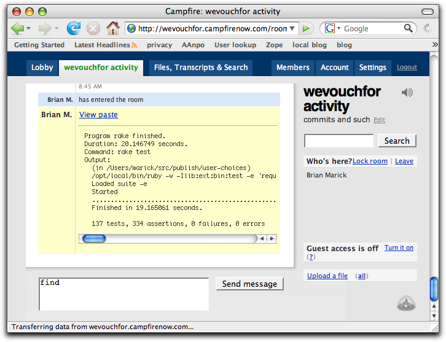
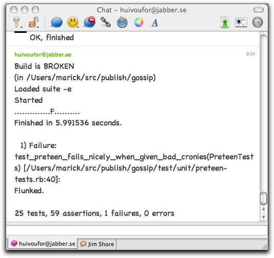
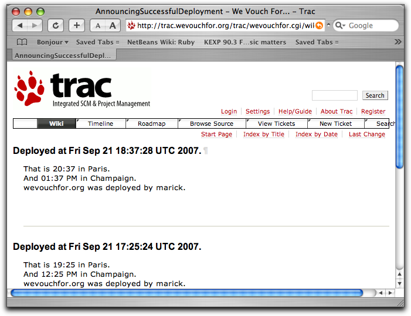
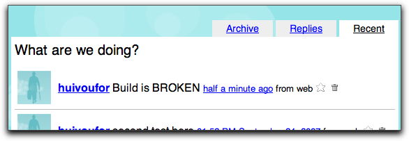

Here are the capsule descriptions:
The campfire crony talks to Campfire, a browser-based chat room.
The jabber crony talks Jabber, a chat protocol with servers that are easy to set up, making it nice for workgroups.
The mail crony speaks to email servers via the SMTP protocol. SSL is not supported.
The standard output crony just sends mail to standard output (the current window). It's useful checking whether (for example), you're using watchdog correctly before blasting the results to the entire world.
The trac crony puts a notice in a Trac timeline.
The twitter crony sends an update to a Twitter account.
My configuration file turns the campfile crony off. I can turn
it on with the -c (or --campfire) option, like
this:
% watchdog -c rake
The result at wevouchfor.campfirenow.com looks like this:
The scandal is the first line of the message; the details are the rest.
To use the campfire crony, you must have a Campfire account with a chat room set up. Set the following in a configuration file or on the command line:
wevouchfor.wevouchfor activity.Here is an example of a continuous build server telling jabber (and perhaps other cronies) about a broken build:
The scandal is the first line of the message; the details are the rest.
To use the jabber crony, you must have an account on some Jabber server. In this example, Jabber messages come from huivoufor@jabber.se.
huivoufor@jabber.se, in this case.
jabber-to:
- brianmarick@jabberplace.org
- someone@xmpphost.org
If you only want one account to receive the message, you can abbreviate the YAML to this:
jabber-to: brianmarick@jabberplace.org
On the command line, multiple accounts are separated by commas, like this:
--jabber-to=fred@example.com,brianmarick@example.com
When mail is sent, the scandal is used as the subject line and the details are put into the body. Here are the choices you have to make:
mail-to:
- marick@example.com
- person@example.org
If you only want one account to receive the mail, you can abbreviate the YAML to this:
mail-to: marick@example.com
On the command line, multiple accounts are separated by commas, like this:
--mail-to=marick@example.com,person@example.com
mail-from.plain, login, or cram_md5.This crony just prints the scandal and details to the current terminal window. There are no options.
The trac crony puts a notice in the Trac timeline, where it looks like this:
The mechanism is a hack. To do it right, you'd have to write a plugin and enable XMP/RPC and whatnot. So the implementation is to edit a Wiki page, turning the scandal into a header and putting the details below it. That looks like this:
Then, if the Trac timeline is set to display changes to Wiki pages (configurable per-user on the Timeline page), the changed page's title will appear in the Timeline. You have to click through to see the scandal and details.
To further ease the implementation, the editing of the Wiki page is done on the server with the trac-admin command. That means the Gossip script has to run on the server too.
It would be swell if someone were to contribute a less hackish implementation.
To use this implementation, you have to set the following:
trac-admin program./home/user/trac_env1).Because Twitter is meant for short messages, only the scandal is sent:

To use the twitter crony, you need a Twitter account. Messages are sent to that account for others to view. The configuration options are:
Next: All scripts